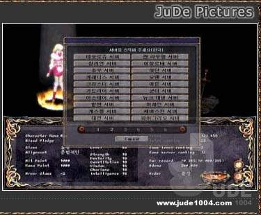

|
2002年10月8日
法古斯成為香港愛神首名Lv52
圖片取自 news://news.newsgroup.com.hk/newsgroup.game.lineage ，作者為Domila：
香港愛神自2002年4月20日開啟後，經過近6個月後，終於出現Lv52的角色了！
遺忘之島即將加入韓國正式伺服器
來源：Jude1004.com
英文翻譯：Lineage Compendium

Jude1004.com發現替大家解封遺忘之島道的NPC已經出現在象牙塔中，這亦意味著遺忘之島在短期會加入韓國正式伺服器中。
Lineage Tournament抓圖
來源：Jude1004.com
英文翻譯：Lineage Compendium
|
Lineage Tournament的標題畫面。 |
|
登入的畫面，你不能在這裡建立新角色，你只可以在正常天堂遊戲中建立新角色。 |
|  |
你可以在任何伺服器中選擇角色參戰。 |
|
在選擇角色後便可以選擇適合自己等級的頻道，共有五個頻道，分別是食人妖精頻道（15-30級）、歐吉頻道（31-40級）、思克巴頻道（41-46級）、巴風特頻道（47-51級）及死亡騎士頻道（52級或以上）。 |
|
像Battle.Net一樣，在頻道中可以建立自己的遊戲房間或參與其他人的房間。遊戲房間可以設為有密碼保護的私人房間，或者公開的房間。你亦可以去商店購物，設定熱鍵及和其他玩家聊天。 |
|
在商店中所用的金幣系統和本身遊戲的不同。每場比賽開始前都提供一筆金錢供玩家去購道具，在戰事結束後原先的道具會消失，而系統亦會重新提供一筆金錢。 |
|
在頻道中建立自己的遊戲房間。 |
|
在開戰前大家可以看看各隊伍的資料。 |
|